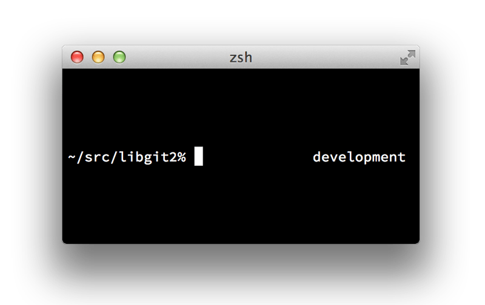

A.7 Git in Zsh
Git in Zsh
Zsh also ships with a tab-completion library for Git.
To use it, simply run autoload -Uz compinit && compinit in your .zshrc.
Zsh’s interface is a bit more powerful than Bash’s:
$ git che<tab>
check-attr -- display gitattributes information
check-ref-format -- ensure that a reference name is well formed
checkout -- checkout branch or paths to working tree
checkout-index -- copy files from index to working directory
cherry -- find commits not merged upstream
cherry-pick -- apply changes introduced by some existing commitsAmbiguous tab-completions aren’t just listed; they have helpful descriptions, and you can graphically navigate the list by repeatedly hitting tab. This works with Git commands, their arguments, and names of things inside the repository (like refs and remotes), as well as filenames and all the other things Zsh knows how to tab-complete.
Zsh ships with a framework for getting information from version control systems, called vcs_info.
To include the branch name in the prompt on the right side, add these lines to your ~/.zshrc file:
autoload -Uz vcs_info
precmd_vcs_info() { vcs_info }
precmd_functions+=( precmd_vcs_info )
setopt prompt_subst
RPROMPT=\$vcs_info_msg_0_
# PROMPT=\$vcs_info_msg_0_'%# '
zstyle ':vcs_info:git:*' formats '%b'This results in a display of the current branch on the right-hand side of the terminal window, whenever your shell is inside a Git repository. The left side is supported as well, of course; just uncomment the assignment to PROMPT. It looks a bit like this:

図 161. Customized
zsh promptFor more information on vcs_info, check out its documentation in the zshcontrib(1) manual page, or online at http://zsh.sourceforge.net/Doc/Release/User-Contributions.html#Version-Control-Information.
Instead of vcs_info, you might prefer the prompt customization script that ships with Git, called git-prompt.sh; see https://github.com/git/git/blob/master/contrib/completion/git-prompt.sh for details.
git-prompt.sh is compatible with both Bash and Zsh.
Zsh is powerful enough that there are entire frameworks dedicated to making it better. One of them is called "oh-my-zsh", and it can be found at https://github.com/robbyrussell/oh-my-zsh. oh-my-zsh’s plugin system comes with powerful git tab-completion, and it has a variety of prompt "themes", many of which display version-control data. An example of an oh-my-zsh theme is just one example of what can be done with this system.

図 162. An example of an oh-my-zsh theme